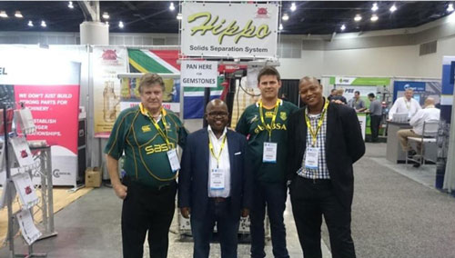

Press ReleaseПресс-релиз

The PDAC International Convention, Trade Show & Investors Exchange is the world's leading convention for people, companies and organisations in, or connected with, mineral exploration. Over 900 exhibitors and 22,000 attendees from more than 100 countries attend, alongside technical sessions, short courses and networking events. Held annually in Toronto, Canada since 1932, it is today the event of choice for the world's mineral industry.
PDAC is regarded as a crucial event for the international mining industry, bringing together the main decision-makers for projects across the Americas and Africa, who are always sourcing reliable products for use in their international mining operations — which is why Hazleton Pumps chose to participate again in PDAC 2017.
Hazleton Pumps, the South African family-owned and managed company, first exhibited at PDAC in 2016, showcasing the Hippo Submersible Slurry Pump range and its capability to pump liquids containing solids.
To demonstrate these capabilities clearly, the company developed a working model of a solid-separation pumping system — one of the most important mining applications, in which solids are separated from the liquid they are suspended in. A small Hippo submersible slurry pump feeds the cyclone, the solids are separated out, and are then returned to the pump and remixed for the process to repeat — ideal for exhibition demonstrations.
Since the 2016 PDAC, Hazleton Pumps has received and completed orders from Canada worth more than R8.5 million, and continued participation at this event is essential to sustaining growth in this market. The demonstration unit has also been used at CIM in Vancouver, where the South African Consul General and trade representatives visited the Hazleton Pumps stand.
Международная конференция, выставка и инвестиционная биржа PDAC — ведущее в мире мероприятие для людей, компаний и организаций, связанных с геологоразведкой. Мероприятие собирает более 900 экспонентов и 22 000 участников из более чем 100 стран; в программе — технические сессии, курсы и сетевые мероприятия. Проводимая ежегодно в Торонто (Канада) с 1932 года, сегодня это главное событие для мировой горнодобывающей отрасли.
PDAC считается важнейшим событием для международной горнодобывающей отрасли, собирающим ключевых лиц, принимающих решения по проектам в Северной и Южной Америке и Африке — и именно поэтому компания Hazleton Pumps вновь приняла участие в PDAC 2017.
Hazleton Pumps — южноафриканская семейная компания — впервые представила свою продукцию на PDAC в 2016 году, продемонстрировав линейку погружных шламовых насосов Hippo и их способность перекачивать жидкости с твёрдыми включениями.
Чтобы наглядно показать эти возможности, компания разработала рабочую модель системы отделения твёрдых частиц — одного из важнейших процессов в горной добыче, при котором твёрдые частицы отделяются от перекачиваемой жидкости. Небольшой погружной насос Hippo подаёт смесь в циклон, где происходит разделение, после чего твёрдые частицы возвращаются обратно в насос для повторного цикла — удобное решение для демонстрации на выставках.
С момента участия в PDAC 2016 года компания Hazleton Pumps получила и выполнила заказы из Канады на сумму более 8,5 млн южноафриканских рандов, и дальнейшее участие в этом мероприятии остаётся важным условием роста на этом рынке. Демонстрационная установка также использовалась на выставке CIM в Ванкувере, где стенд Hazleton Pumps посетили генеральный консул ЮАР и торговые представители.
Our pump solutions can be custom made to your pumping requirements. Don't see a solution to your current pumping problem?
Наши насосные решения изготавливаются индивидуально под задачи заказчика. Не нашли готовое решение для своей задачи?